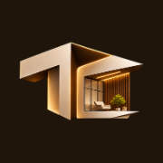
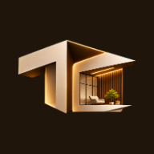
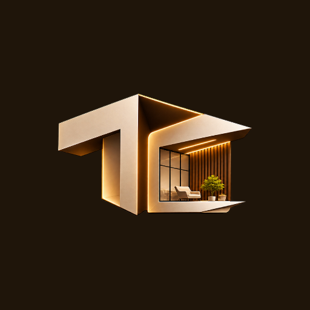

Everything here is read from the files next to this page. Nothing is served by the website. Re-run node site/brand/build-preview.mjs after changing loader.html.
Each button reloads the frame with a fake page behind the loader. "Slow" opens after 5 s, "Fast" after 0.4 s. For the reduced-motion version turn on Reduce motion in the system settings (or the browser's Rendering panel) and replay.
Chosen: one line, emblem left, TERUCON right (logo-header-*.webp). On cream pages use tc-logo--on-light (dark pill). The stacked crop was rejected: its letters are about 7 px tall at a 36 px header.


